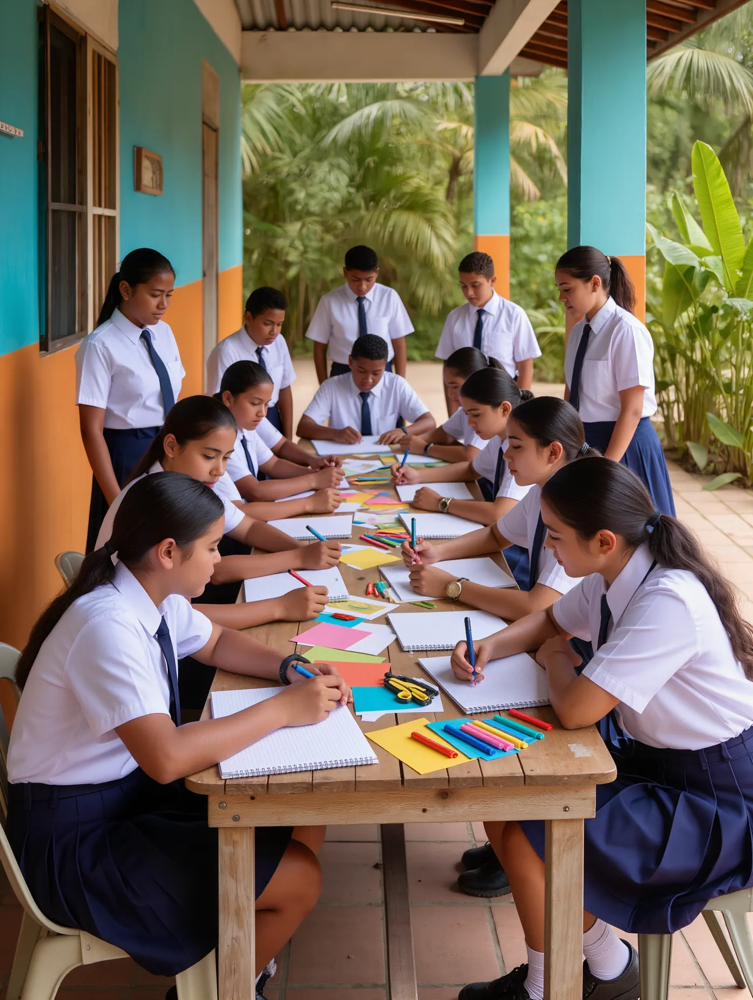
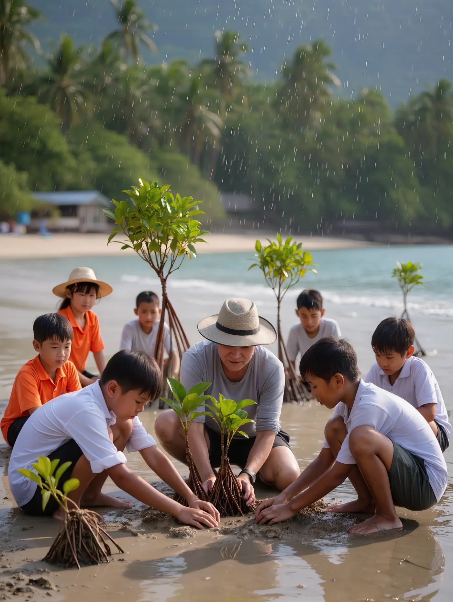
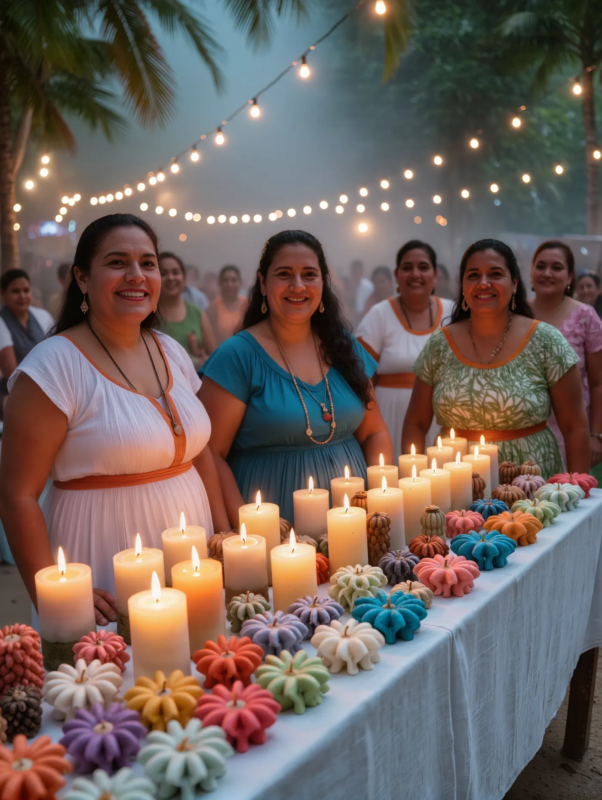
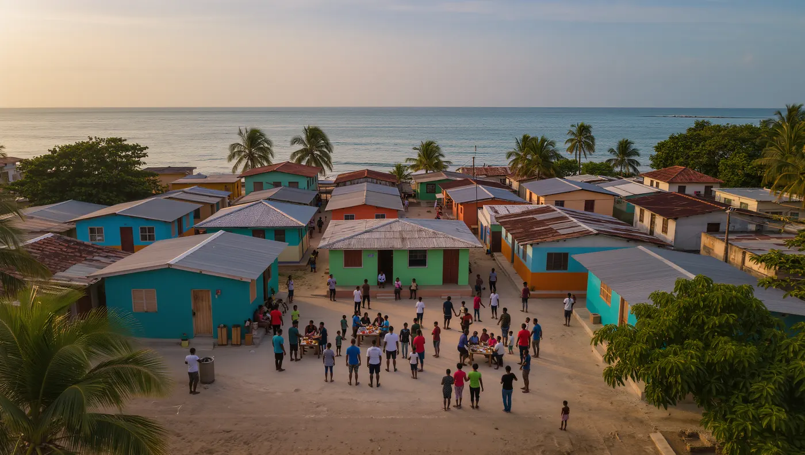
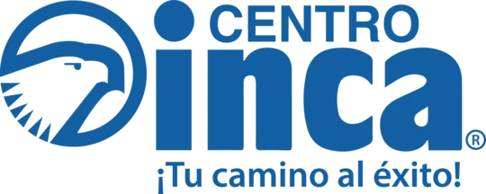
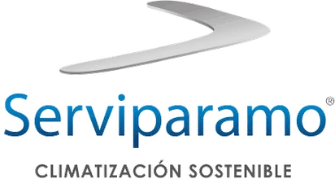
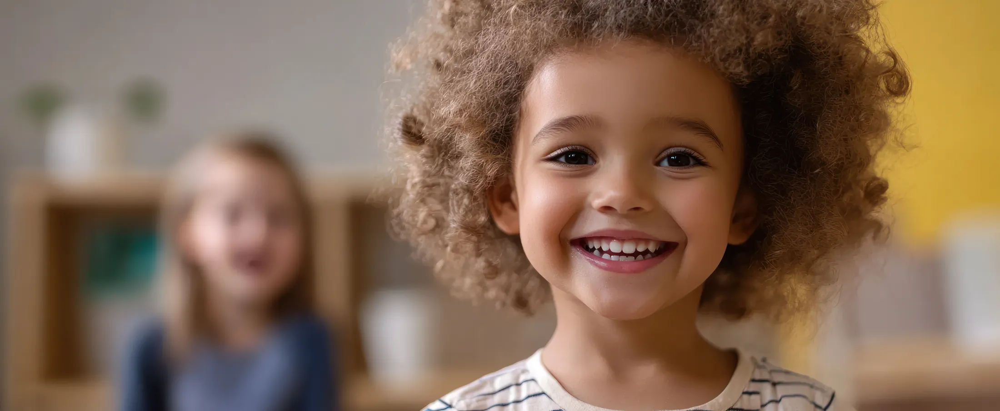
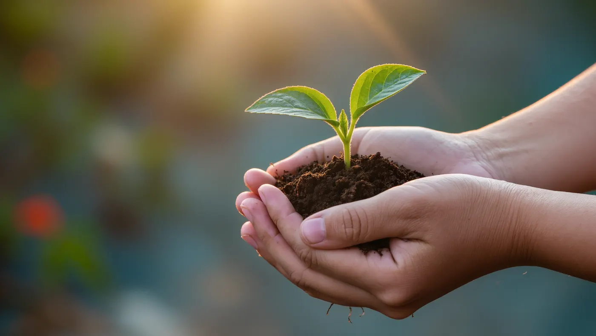
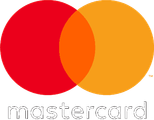
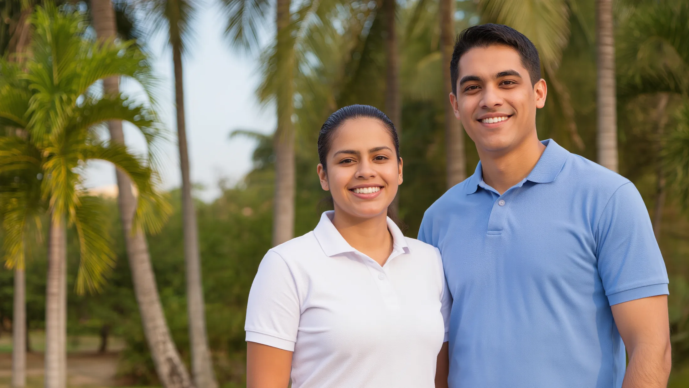

Educación
Facilitamos oportunidades para el acceso y permanencia educativa, formación superior y desarrollo de competencias.
Colaboradores
Escanea el código QR para chatear con nosotros desde tu celular.
Nuestra labor se desarrolla en dos grandes frentes: fortalecemos las capacidades y condiciones de vida de nuestros colaboradores y sus familias, y contribuimos a la transformación social de las comunidades de nuestro entorno.
Colaboradores y sus familias
Educación, vivienda y bienestar para generar oportunidades de desarrollo y mejorar la calidad de vida.
Comunidades
Trabajamos especialmente en Salgar mediante iniciativas de gestión social y ambiental.
Facilitamos oportunidades para el acceso y permanencia educativa, formación superior y desarrollo de competencias.
ColaboradoresApoyamos el acceso, mejoramiento y adecuación de viviendas para contribuir a hogares dignos y seguros.
Colaboradores
Promovemos la salud física, mental y emocional, el desarrollo personal, la actividad física y el emprendimiento.
Colaboradores
Fortalecemos capacidades, participación y tejido social en las comunidades de nuestro entorno.
Comunidad
Promovemos educación ambiental y prácticas responsables para el cuidado y conservación del entorno.
Comunidad




Hay muchas formas de contribuir a la transformación social. Encuentra la que mejor se adapte a ti o a tu organización.
Apoya directamente las iniciativas de la Fundación.
Comparte tu tiempo, conocimientos y capacidades.
Construyamos iniciativas que generen impacto.
Contribuye a una iniciativa específica.







Conoce nuestra labor, apoya nuestros programas o construye con nosotros nuevas oportunidades de transformación.
Desde 1989 trabajamos por el bienestar y el desarrollo integral de nuestros colaboradores, sus familias y las comunidades de nuestro entorno.
El 18 de julio nace FundaCountry, una iniciativa del Country Club de Barranquilla para fortalecer el bienestar y desarrollo integral de sus colaboradores y sus familias, en educación, vivienda y bienestar.
Ampliamos nuestro campo de acción hacia las comunidades del entorno y consolidamos dos enfoques: el fortalecimiento interno de los colaboradores y la transformación social del entorno.
El 1 de octubre ampliamos el objeto social, lo que dio paso a la Fundación Social Country Club de Barranquilla.
Lo que sigue lo escribimos juntos.
SúmateContribuir al bienestar y la transformación social de nuestros colaboradores, sus familias y las comunidades de nuestro entorno, generando oportunidades para su desarrollo integral y una mejor calidad de vida.
Mejoramos las condiciones de vida y el desarrollo integral de nuestros colaboradores, sus familias y las comunidades de nuestro entorno, con programas de educación, salud, bienestar y asistencia social.
Ser una Fundación reconocida por la calidad y sostenibilidad de su acción social, con programas que transformen la vida de los colaboradores, sus familias y las comunidades de nuestro entorno.
Asumimos con responsabilidad nuestro propósito y cada iniciativa que desarrollamos.
Comprendemos las diferentes realidades y promovemos acciones pertinentes y humanas.
Reconocemos las necesidades de las personas y trabajamos para generar oportunidades.
Buscamos que nuestras acciones generen un impacto positivo y sostenible.
Programas para colaboradores y sus familias, y para las comunidades de nuestro entorno, organizados en cinco líneas de trabajo.

Emprendiendo Juntos – Comunidad, con mujeres del corregimiento de Salgar.
Consulta los informes de gestión, los estados financieros y los documentos institucionales de la Fundación, organizados por año.
Detrás de cada programa hay personas, aprendizajes y nuevas oportunidades. Conoce las historias de quienes han sido parte de nuestra labor.
Aquí irá el testimonio, contado en sus propias palabras.
Cuál era su situación antes de llegar a la Fundación.
Cómo intervino la Fundación y con qué programa.
Qué cambió después en su vida o en la de su familia.
Cuál era su situación antes de llegar a la Fundación.
Cómo intervino la Fundación y con qué programa.
Qué cambió después en su vida o en la de su familia.
Aquí irá el testimonio, contado en sus propias palabras.
Cuál era su situación antes de llegar a la Fundación.
Cómo intervino la Fundación y con qué programa.
Qué cambió después en su vida o en la de su familia.
Aquí irá el testimonio, contado en sus propias palabras.
Cuál era su situación antes de llegar a la Fundación.
Cómo intervino la Fundación y con qué programa.
Qué cambió después en su vida o en la de su familia.
Aquí irá el testimonio, contado en sus propias palabras.
Personas, empresas, socios del Club, voluntarios e instituciones pueden hacer parte. Elige una forma de apoyo para conocer cómo funciona.

Apoya directamente las iniciativas de la Fundación.
Medios de pago y pasos para hacer tu aporte.
Aportes económicos y montos sugeridos.
A qué programas y necesidades se dirige cada aporte.
A quién escribir para resolver dudas sobre tu donación.
Comparte tu tiempo, conocimientos y capacidades.
Pasos para inscribirte como voluntario.
Conocimientos y habilidades que buscamos.
En qué programas y espacios puedes aportar.
Dedicación sugerida y horarios de las actividades.
Orientada principalmente a empresas e instituciones. Construyamos juntos iniciativas que generen impacto.
Dirige tu apoyo hacia una iniciativa específica.
Conoce qué tipo de aportes recibimos y cómo hacerlos llegar.
Materiales, útiles, equipos u otros bienes que necesitan los programas.
Canal y horarios para coordinar la entrega.
Si tienes dudas te contactaremos para contarte cuáles serían los siguientes pasos.
Cuenta de ahorros Bancolombia000-000000-00
A nombre de Fundación Social Country Club de Barranquilla · NIT 000.000.000-0

Aquí irá la noticia más reciente o importante de la Fundación, con un resumen corto y el enlace para leerla completa.
Resumen corto de la noticia: qué pasó, quiénes participaron y qué resultados dejó.
Leer noticiaResumen corto de la noticia: qué pasó, quiénes participaron y qué resultados dejó.
Leer noticiaTras ocho meses de talleres, los estudiantes del Colegio Eustorgio Salgar cerraron el ciclo de Descubriendo mis Habilidades con una jornada en la que presentaron a sus familias y a la comunidad los proyectos que construyeron durante el año.
Veinte mujeres del corregimiento de Salgar recibieron su certificado tras completar el ciclo de formación de Emprendiendo Juntos – Comunidad, en una ceremonia en la que exhibieron las velas decorativas que aprendieron a elaborar.
La Vitrina abrió una nueva edición con los productos y trabajos elaborados por quienes participan en los programas de la Fundación: velas decorativas, manualidades y proyectos escolares que por unos días salieron del aula para encontrarse con el público.
La Fundación abrió la convocatoria anual del Proyecto Vivienda Digna, que entrega subsidios a los colaboradores para atender necesidades locativas básicas y prioritarias de sus hogares.
Con el inicio del nuevo calendario escolar, la Fundación abre la entrega de los auxilios educativo-escolares, un apoyo económico para que los hijos de los colaboradores cuenten con lo necesario para comenzar y continuar sus estudios.
La Fundación suma nuevos convenios con empresas e instituciones de la región para ampliar el alcance de sus programas de educación, vivienda, bienestar y gestión social.
Contenido de ejemplo para mostrar el diseño de la noticia.
Tras ocho meses de talleres, los estudiantes del Colegio Eustorgio Salgar cerraron el ciclo de Descubriendo mis Habilidades con una jornada en la que presentaron a sus familias y a la comunidad los proyectos que construyeron durante el año.
La clausura reunió a estudiantes, docentes, padres de familia y colaboradores del Country Club de Barranquilla en el patio principal del colegio. Durante la mañana, cada grupo expuso su proyecto en una pequeña feria: productos hechos a mano, propuestas de servicio para el barrio e ideas de negocio pensadas desde lo que saben y les gusta hacer.
El programa hace parte de la línea de Gestión social de la Fundación y se desarrolla cada año, de abril a noviembre. Su propósito es fortalecer en los estudiantes competencias para la vida, el ser y el saber hacer, con un acompañamiento pedagógico que combina el trabajo en el aula con actividades prácticas.
A lo largo del ciclo, los participantes trabajaron en tres frentes: reconocer sus propias habilidades, aprender a trabajar en equipo y convertir una idea en un proyecto que pudieran mostrar. Cada encuentro terminaba con un reto pequeño que debían resolver antes de la siguiente sesión.
«Aprendí que mis ideas también pueden convertirse en un proyecto, y que no tengo que hacerlo sola.»
Estudiante de décimo grado, participante del programa
Para los docentes, el cambio más visible estuvo en la confianza con la que los estudiantes hablaron en público. Varios de ellos presentaron por primera vez frente a un auditorio y respondieron las preguntas de los asistentes sobre costos, materiales y tiempos de elaboración.
La jornada cerró con la entrega de reconocimientos y un espacio para que las familias recorrieran los puestos. Algunos de los productos se exhibirán en La Vitrina, el espacio donde la Fundación muestra los trabajos de los participantes de sus programas.
La Fundación abrirá una nueva convocatoria del programa al inicio del próximo calendario escolar. Las fechas se anunciarán en esta sección de noticias y en las redes sociales.
Veinte mujeres del corregimiento de Salgar recibieron su certificado tras completar el ciclo de formación de Emprendiendo Juntos – Comunidad, en una ceremonia en la que exhibieron las velas decorativas que aprendieron a elaborar.
La Vitrina abrió una nueva edición con los productos y trabajos elaborados por quienes participan en los programas de la Fundación: velas decorativas, manualidades y proyectos escolares que por unos días salieron del aula para encontrarse con el público.
La Fundación abrió la convocatoria anual del Proyecto Vivienda Digna, que entrega subsidios a los colaboradores para atender necesidades locativas básicas y prioritarias de sus hogares.
Contenido de ejemplo para mostrar el diseño de la noticia.
Veinte mujeres del corregimiento de Salgar recibieron su certificado tras completar el ciclo de formación de Emprendiendo Juntos – Comunidad, en una ceremonia en la que exhibieron las velas decorativas que aprendieron a elaborar.
El acto de cierre se realizó en la Institución Educativa Eustorgio Salgar, el mismo lugar donde las participantes se reunieron todos los jueves, y algunos viernes, durante el programa. Cada una montó una mesa con sus productos: velas aromáticas, de molde y decorativas, con empaques y etiquetas diseñados por ellas mismas.
Emprendiendo Juntos – Comunidad es un programa de formación, asesoría y acompañamiento que fortalece habilidades emprendedoras y competencias personales. Trabaja tres componentes: emprendimiento, competencias para la vida y elaboración de velas decorativas.
Las primeras sesiones se dedicaron a lo básico: cuánto cuesta producir una vela, cómo ponerle precio y a quién vendérsela. Después llegó la práctica, con jornadas completas de taller para dominar las técnicas y mejorar los acabados.
«Antes regalaba lo que hacía. Ahora sé cuánto vale mi trabajo y cómo ofrecerlo.»
Participante de Emprendiendo Juntos – Comunidad
Además del oficio, las participantes destacaron lo que ganaron en confianza. Varias llegaron sin haber vendido nunca un producto propio y cerraron el ciclo con pedidos de vecinos y familiares.
Durante la ceremonia, las familias recorrieron la muestra y pudieron comprar directamente a las emprendedoras. Una selección de las velas hará parte de La Vitrina de la Fundación.
El equipo de la Fundación seguirá acompañando a las egresadas en la etapa de comercialización. La próxima cohorte se anunciará en esta sección de noticias.
La Vitrina abrió una nueva edición con los productos y trabajos elaborados por quienes participan en los programas de la Fundación: velas decorativas, manualidades y proyectos escolares que por unos días salieron del aula para encontrarse con el público.
La Fundación abrió la convocatoria anual del Proyecto Vivienda Digna, que entrega subsidios a los colaboradores para atender necesidades locativas básicas y prioritarias de sus hogares.
Con el inicio del nuevo calendario escolar, la Fundación abre la entrega de los auxilios educativo-escolares, un apoyo económico para que los hijos de los colaboradores cuenten con lo necesario para comenzar y continuar sus estudios.
Contenido de ejemplo para mostrar el diseño de la noticia.
La Vitrina abrió una nueva edición con los productos y trabajos elaborados por quienes participan en los programas de la Fundación: velas decorativas, manualidades y proyectos escolares que por unos días salieron del aula para encontrarse con el público.
El espacio se instaló en una de las zonas comunes del Country Club de Barranquilla para que socios y colaboradores pudieran recorrerlo. Cada mesa tenía a su lado a la persona que hizo el producto, lista para contar cómo lo elaboró y qué aprendió en el camino.
La Vitrina nació como una forma de mostrar los resultados de los programas de Gestión social. Más que una feria de ventas, es un espacio para que los participantes practiquen cómo presentar su trabajo, atender a un cliente y recibir comentarios.
En esta edición estuvieron las emprendedoras de Emprendiendo Juntos – Comunidad y un grupo de estudiantes de Descubriendo mis Habilidades. Para muchos fue la primera vez que ofrecieron lo que hacen a personas fuera de su círculo cercano.
«Explicar cómo hago mis velas me hizo darme cuenta de todo lo que ya sé.»
Expositora de La Vitrina
Los visitantes dejaron sus opiniones en tarjetas que luego se entregaron a cada expositor. Varias de las sugerencias, sobre empaques, tamaños y precios, se trabajarán en las siguientes sesiones de los programas.
Al cierre, los expositores compartieron un espacio de balance con el equipo de la Fundación para revisar qué funcionó y qué quieren mejorar antes de la próxima muestra.
La Fundación prepara una nueva edición de La Vitrina. La fecha y el lugar se publicarán en esta sección de noticias.
La Fundación abrió la convocatoria anual del Proyecto Vivienda Digna, que entrega subsidios a los colaboradores para atender necesidades locativas básicas y prioritarias de sus hogares.
Con el inicio del nuevo calendario escolar, la Fundación abre la entrega de los auxilios educativo-escolares, un apoyo económico para que los hijos de los colaboradores cuenten con lo necesario para comenzar y continuar sus estudios.
La Fundación suma nuevos convenios con empresas e instituciones de la región para ampliar el alcance de sus programas de educación, vivienda, bienestar y gestión social.
Contenido de ejemplo para mostrar el diseño de la noticia.
La Fundación abrió la convocatoria anual del Proyecto Vivienda Digna, que entrega subsidios a los colaboradores para atender necesidades locativas básicas y prioritarias de sus hogares.
El proyecto hace parte de la línea de Vivienda y está dirigido a los colaboradores del Country Club de Barranquilla y sus familias. Se realiza una convocatoria al año y prioriza las adecuaciones que más inciden en la seguridad y la salud del hogar.
Entre las mejoras que se pueden postular están arreglos de techos, pisos, baños y cocinas, así como reparaciones de redes eléctricas e hidráulicas. Cada solicitud se revisa con una visita al hogar para verificar la necesidad y definir el alcance de la obra.
Para postularse, el colaborador debe diligenciar el formulario, adjuntar los documentos de la vivienda y describir la mejora que necesita. El equipo de la Fundación acompaña el proceso y resuelve dudas durante todo el periodo de inscripción.
«Con la cocina terminada, por fin podemos sentarnos todos a comer en la casa.»
Colaborador beneficiado en una convocatoria anterior
Las familias beneficiadas en convocatorias anteriores coinciden en que el cambio va más allá de la obra: un baño terminado o un techo sin goteras modifican la rutina diaria de toda la casa.
Una vez cerrada la inscripción, un comité evalúa las solicitudes y publica los resultados. Las obras se programan con cada familia para afectar lo menos posible su día a día.
Las fechas de apertura y cierre, los requisitos completos y el formulario se compartirán por los canales internos del Club y en esta sección de noticias.
Con el inicio del nuevo calendario escolar, la Fundación abre la entrega de los auxilios educativo-escolares, un apoyo económico para que los hijos de los colaboradores cuenten con lo necesario para comenzar y continuar sus estudios.
La Fundación suma nuevos convenios con empresas e instituciones de la región para ampliar el alcance de sus programas de educación, vivienda, bienestar y gestión social.
Tras ocho meses de talleres, los estudiantes del Colegio Eustorgio Salgar cerraron el ciclo de Descubriendo mis Habilidades con una jornada en la que presentaron a sus familias y a la comunidad los proyectos que construyeron durante el año.
Contenido de ejemplo para mostrar el diseño de la noticia.
Con el inicio del nuevo calendario escolar, la Fundación abre la entrega de los auxilios educativo-escolares, un apoyo económico para que los hijos de los colaboradores cuenten con lo necesario para comenzar y continuar sus estudios.
Los auxilios hacen parte de la línea de Educación y se entregan dos veces al año, al inicio de los calendarios A y B. Están pensados para cubrir gastos escolares como útiles, uniformes y matrículas en los niveles de primaria y secundaria.
El objetivo es promover la permanencia educativa: que ningún estudiante interrumpa sus clases por no contar con los materiales básicos. Por eso el apoyo llega antes de que arranquen las actividades académicas.
Para acceder al auxilio, el colaborador debe presentar el certificado de estudios vigente de cada hijo y diligenciar la solicitud dentro de las fechas establecidas. El equipo de la Fundación revisa la documentación y confirma la entrega.
«Saber que los útiles ya están resueltos nos quita un peso de encima cada enero.»
Colaboradora y madre de dos estudiantes
Para muchas familias, este apoyo llega en el momento de mayor gasto del año. Los padres destacan que les permite planear el regreso a clases con más tranquilidad.
Además del auxilio escolar, la Fundación cuenta con el Auxilio de educación superior, dirigido a quienes adelantan estudios universitarios o de formación técnica y tecnológica.
Las fechas de solicitud y los requisitos se informarán por los canales internos del Club y en esta sección de noticias.
La Fundación suma nuevos convenios con empresas e instituciones de la región para ampliar el alcance de sus programas de educación, vivienda, bienestar y gestión social.
Tras ocho meses de talleres, los estudiantes del Colegio Eustorgio Salgar cerraron el ciclo de Descubriendo mis Habilidades con una jornada en la que presentaron a sus familias y a la comunidad los proyectos que construyeron durante el año.
Veinte mujeres del corregimiento de Salgar recibieron su certificado tras completar el ciclo de formación de Emprendiendo Juntos – Comunidad, en una ceremonia en la que exhibieron las velas decorativas que aprendieron a elaborar.
Contenido de ejemplo para mostrar el diseño de la noticia.
La Fundación suma nuevos convenios con empresas e instituciones de la región para ampliar el alcance de sus programas de educación, vivienda, bienestar y gestión social.
Las alianzas permiten llegar a más personas y fortalecer lo que ya se hace. Algunas aportan recursos económicos; otras, conocimiento técnico, espacios de formación o voluntariado de sus equipos.
Los nuevos convenios se concentran en tres frentes: formación para el trabajo y el emprendimiento, mejoramiento de vivienda y actividades de bienestar para los colaboradores y sus familias.
Cada alianza parte de una necesidad identificada en los programas. Antes de firmar, la Fundación y la organización aliada definen juntos el objetivo, las personas a las que se quiere llegar y la forma de medir los resultados.
«Buscamos aliados que quieran quedarse: los cambios que importan toman tiempo.»
Equipo de la Fundación
Para los aliados, el vínculo también tiene valor: les permite participar en proyectos con resultados visibles y acompañados por un equipo que conoce de cerca a la comunidad.
Los convenios vigentes tendrán seguimiento periódico y sus avances se compartirán en la sección Nuestro impacto.
Las organizaciones interesadas en sumarse pueden escribir a la Fundación desde la sección Sé parte, en la opción Haz una alianza.
Tras ocho meses de talleres, los estudiantes del Colegio Eustorgio Salgar cerraron el ciclo de Descubriendo mis Habilidades con una jornada en la que presentaron a sus familias y a la comunidad los proyectos que construyeron durante el año.
Veinte mujeres del corregimiento de Salgar recibieron su certificado tras completar el ciclo de formación de Emprendiendo Juntos – Comunidad, en una ceremonia en la que exhibieron las velas decorativas que aprendieron a elaborar.
La Vitrina abrió una nueva edición con los productos y trabajos elaborados por quienes participan en los programas de la Fundación: velas decorativas, manualidades y proyectos escolares que por unos días salieron del aula para encontrarse con el público.

Súmate a un equipo que desde 1989 trabaja por el bienestar y el desarrollo integral de las personas. Conoce las vacantes abiertas y postúlate.
Consulta y descarga los informes de gestión, los estados financieros y los documentos institucionales de la Fundación, organizados por año.
Escríbenos si quieres donar, ser voluntario, crear una alianza, apoyar un programa o pedir información.